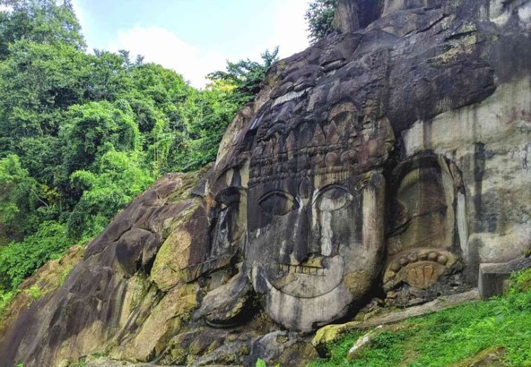

Unakoti

Location of the place
Unakoti lies 178 km to the northeast from Agartala which has the closest airport, 8 km to the east from Kailashahar, district headquarters of Unakoti district, 148 km to the south-east from Silchar. The nearest railway station is 19.6 km away at Dharmanagar railway station on the Lumding–Sabroom section. From Dharmanagar railway station it takes about 30–40 minutes by car. Travelling from the capital town Agartala has become much easier nowadays. The morning train from Agartala reaches Dharmanagar before 10 am. The afternoon train from Dharmanagar reaches Agartala by 8 PM. Located at about 178km from Agartala between Kailashahar and Dhamanagar in north Tripura. Surrounded by dense forest gives an even better reason to trek around and find more
History of the place
Whatever the legends and stories surrounding Unakoti, how and when these bas-relief structures were created remain a mystery. These bas-relief structures were most likely created between the eighth and thirteenth centuries AD, according to archaeologists. It's also possible that the sculptures were created at various times. It's also possible that this location was once a sacred site for the indigenous Tibeto-Burmese tribe. Northern Tripura was a part of Srihatta during the time, which was a well-known Buddhist and Hindu tantric centre. This region was also a vital crossroads for overland commerce routes connecting eastern India to Burma, Thailand, and Cambodia. This overland route, in addition to the sea route, was crucial for the spread of Buddhism and Hinduism to Southeast Asia. According to the Archaeological Survey of India (ASI), there may yet be many reliefs and constructions buried in the hills and woodlands. Not everything has been discovered yet. Unakoti was a memorial to the legendary chieftain Subrai, whose favoured deity was Shiva, according to the most recent historical information we had about it.
Folklore of the place

According to Hindu mythology, Lord Shiva once spent a night here en route to Kashi. 99,99,999 gods and goddesses followed him. He had asked his followers to wake up before sunrise and make their way towards Kashi. Unfortunately, none awoke, except Lord Shiva himself. Before he set out for Kashi alone, he put a curse on the others, turning them to stone. And that is how the site got its name. However, there are not that many sculptures found now. The place is peaceful & surrounded by lush greenery. Another story says that a local Manson wanted to see lord shiva and to please Lord Shiva and his consort Parvati he swore to give one crore sculptures of the lord by the dawn. However, he couldn’t finish it and was short of one.
Speciality of the place
Unakoti is famous for its massive stone and rock-cut sculptures that have been carved out from the hillside. It is immediately apparent that these carvings were made by extremely skilled artisans. The most famous amongst these awe-inspiring carvings are the central Shiva head and gigantic Ganesha figures. The former, known as Unakotiswara Kal Bhairava, is about 30ft high. Its most striking feature is the intricate headdress, which is 10ft high by itself. The headdress of the central Shiva is flanked by Goddess Durga on one side standing on a lion, and Goddess Ganga on the other sitting atop a Capricorn. Besides these, there are several other detailed sculptures including Nandi bulls, Hanuman and Ravana. Unakoti is also well-known for the Ashokastami Festival.
Conclusion
Such awe-striking legends and history to hunt give more enthusiasm to look at that place. The statue of Unakotiswar Shiva is 30 feet tall including a 10 feet crown on the head of Lord Shiva. Is a must-see. A large fair is held on the occasion of the Ashokashtami festival in March-April in Unakoti every year. Thousands of pilgrims come from far and near to worship here. Another smaller festival takes place in January. Not only at the festive time, but tourist has gathered at Unakoti throughout the year from different parts of the country. The government of India has approached UNESCO to declare it as a World Heritage Site.